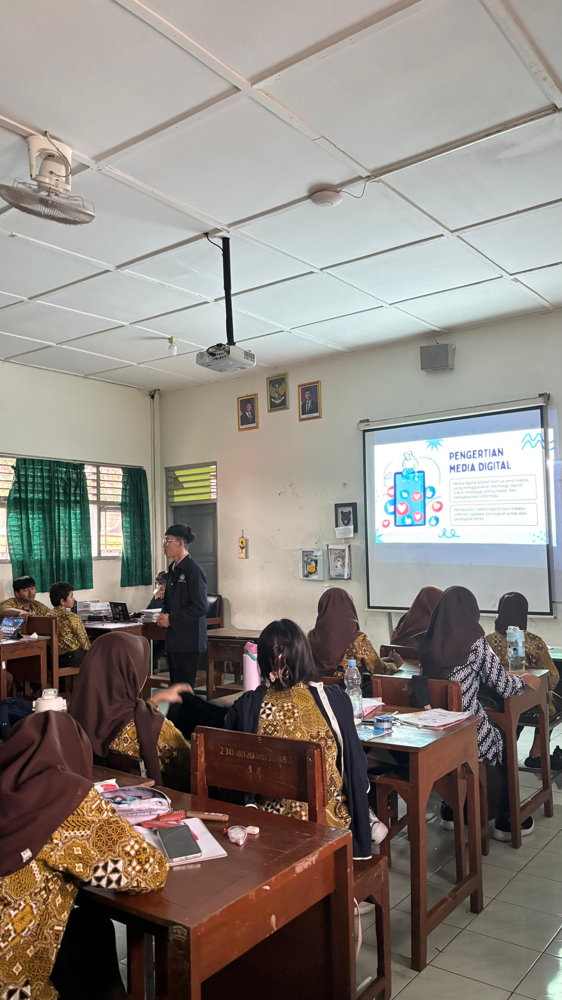
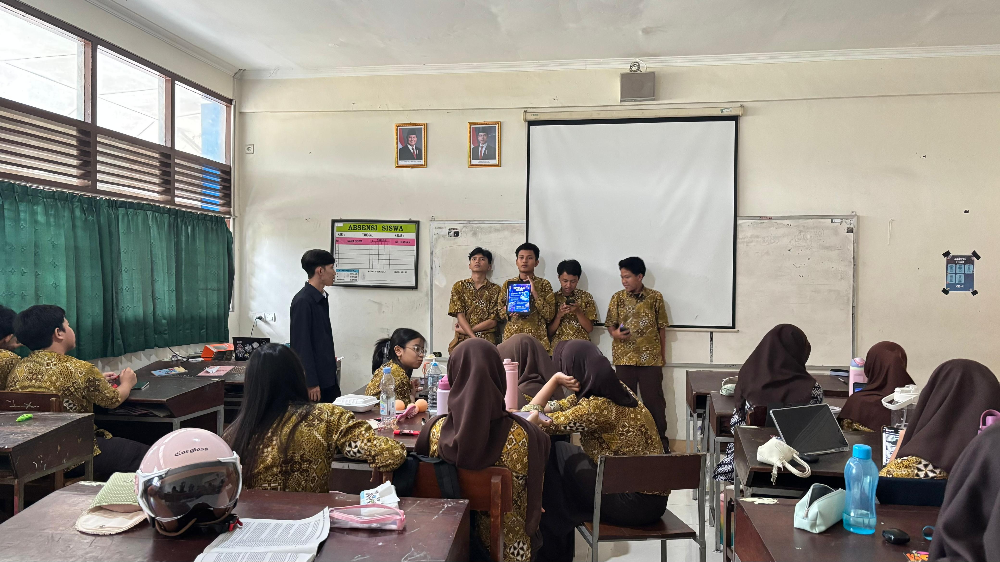
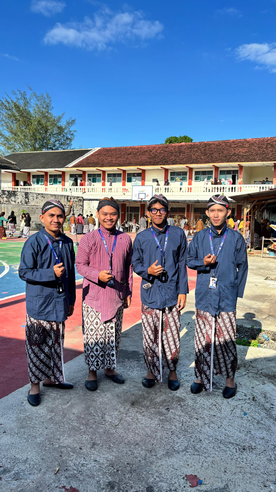
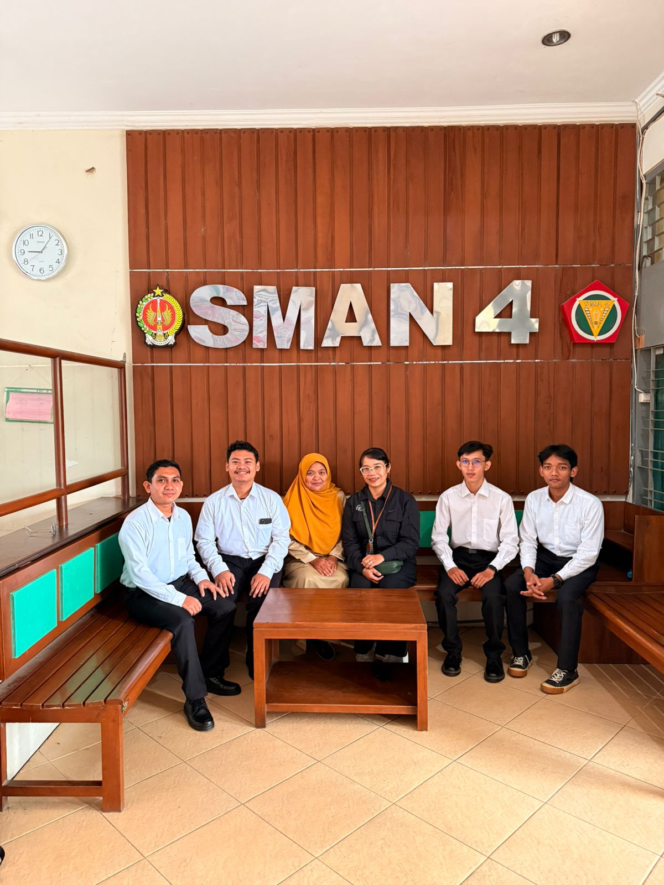

Momen PPL 1
Galeri Dokumentasi
Rekam jejak visual perjalanan transformasi mengajar, kolaborasi, dan interaksi bermakna di SMA Negeri 4 Yogyakarta.

PBM
Praktik Mengajar Kelas X
Praktik mengajar langsung di kelas XE5 dengan model pembelajaran PjBL (Project Based Learning).
Lihat Detail
Bimbingan
Bimbingan Kelompok
Bimbingan bersama DPL membahas terkait pembuatan Modul Ajar.

Observasi
Observasi Sekolah
Kegiatan pengenalan lingkungan dan budaya sekolah.

Asesmen
Asesmen Pembelajaran
Melaksanakan asesmen pembelajaran menggunakan media interaktif.

Rekan Sejawat
Patbhe Boys
Para Pria tampan PPL Patbhe PPG Prajabatan.

Memori
Foto Bersama
Foto bersama Guru Pamong dan Dosen Pembimbing Lapangan (DPL).